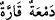
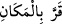

Ümmü Seleme’yi de yanına al aldı. Onlar arasında eşit taksim yapardı.
Rivâyet edilir ki Hz. Peygamber (a.s.) hanımlarından hiç birini taksim dışı
bırakmamış, bu konuda serbest ve muhayyer bırakıldığı halde Hz. Sevde dışında eşleri
arasında eşit taksimat yapmıştır. Hz. Sevde ise kendi isteği ile bu taksim hakkından
feragat etmiş, kendisine âid olan geceyi Hz. Âişe’ye bağışlamış ve: “Beni boşama ki,
hanımların arasında haşr olunayım.” demiştir.
“Böyle olması” yâni zikredilen işin senin tercihine bırakılması “onların mutlu
olmalarına, üzülmemelerine ve hepsinin, senin verdiklerine razı olmalarına daha
uygundur.”
“” kelimesinin aslı, soğuk demek olan “dandır. Sevinç için soğuk gözyaşı (), hüzün için ise sıçak gözyaşı dökülür. Ya da bu kelime “dandır. Yâni böyle
olması, onların gözlerinin karar ve sükun bulup senin onlara yaptığın muâmeleden
başkasına tamah etmemelerine uygundur, demektir. el-Kâmûs’ta der ki: “
gözünün yaşı soğudu, ağlaması kesildi veya çok arzu ve istekli olduğu şeyi gördü
demektir. “ ise bir yerde karar kıldı, sâbit ve sâkin oldu, demektir.”
Onlar kendilerine verdiğin şeyle mutlu ve râzı olsunlar. Madem ki hepsi senin
erteleme, yanına alma, yaklaştırma ve uzaklaştırma türünden yaptığın her şeyin Allâh’ın
emri ile olduğunu biliyorlar, o halde üzülmesinler.
Artık bu durum onların gözlerinin aydın olmasına, üzüntülerinin az olmasına ve
hepsinin razı ve memnun olmasına daha yakındır. Çünkü bu konuda hepsi için verilen
hüküm eşittir. Sonra sen onlar arasında eşit davransan, onlar bunu senin lütfun/ikramın
olarak görürlerdi. Onlardan bir kısmını tercih ettiğinde bunun Allâh’ın hükmüyle
olduğunu bilirler ve gönülleri bununla rahat olur. Rekabet ve kıskançlık gider. Bu
duruma razı olurlar. Bu şartla Allâh’ın hükmünü ve Peygamber’i tercih ederler. İşte
bundan dolayı Allah Teâlâ Hz. Peygamber (s.a.)’in evliliğini mevcut hanımlarına tahsis
ederek sınırlamış, onları boşamasını ve başka kadınlarla evlenmesini haram kılmış, o
hanımları mü’minlerin anneleri eylemiştir. Nitekim Celâleyn Tefsîri’nde böyle
geçmektedir.
Sadece “Allah, kalblerinizde olanı” gizli düşünceleri ve havâtırı “bilir.” O halde
onları güzelleştirmek için gayret edin. “Allah hakkıyla bilendir” açığa vurduklarınızı
da gizlediklerinizi de bilir. “halîmdir” cezâyı vermekte acele etmez. Öyle ise cezâyı
ertelemesine aldanmayın. Çünkü bu ihmal değil ihmal/mühlet vermekten ibârettir.
Boynunu geri çeken âsîleri hemen tutup cezâlandırmaz,
Özür ve af dileyenleri zorla sürüp yürütmez,
Kötü amele öfkelenirse,
Yapılanı (amel defterinde) yazıda bırakırdı,
Ey oğul, bir nefes bile kötü amel işleme,
Sonunda başa ne geleceğini bilemezsin.